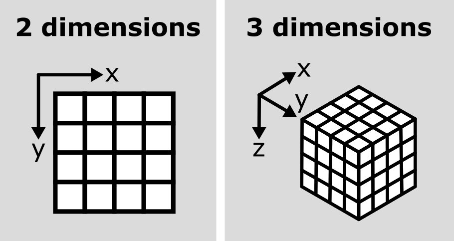

Image 1 of 1: ‘A diagram comparing the array of numbers and image display for a simplified image of an arrow’
Figure 2
Image 1 of 1: ‘A screenshot of a 2D image of human cells undergoing mitosis in Napari’
Figure 3
Image 1 of 1: ‘A screenshot of Napari's delete layer button’
Let’s remove the mitosis image by clicking the remove layer button
at
the top right of the layer list. Then, let’s open a new 3D image: File > Open Sample > napari builtins > Brain (3D)
Figure 4
Image 1 of 1: ‘A screenshot of a head X-ray in Napari’
Figure 5
Image 1 of 1: ‘A diagram comparing 2D and 3D image arrays’

Figure 6
Image 1 of 1: ‘A screenshot of a flourescence microscopy image of some cells in Napari’
Figure 7
Image 1 of 1: ‘A diagram showing different kinds of channels for a 4x4 image of a cell e.g. red / green / surface height / elasticity’
Figure 8
Image 1 of 1: ‘A screenshot of Napari's layer list, showing two image layers named 'nuclei' and 'membrane'’
Figure 9
Image 1 of 1: ‘A diagram comparing image arrays with three (z, y, x) and four (c, z, y, x) dimensions’
Figure 10
Image 1 of 1: ‘A screenshot of Napari's eye button’
Channels can be easily shown/hidden with the
icons
Figure 11
Image 1 of 1: ‘A screenshot of a 2D time series in Napari’
Figure 12
Image 1 of 2: ‘A screenshot of Napari's play button’
Image 2 of 2: ‘A screenshot of Napari's stop button’
This image is a 2D time series (tyx) of some human cells undergoing
mitosis. The slider at the bottom now moves through time, rather than z
or channels. Try moving the slider from left to right - you should see
some nuclei divide and the total number of nuclei increase. You can also
press the small icon at
the left side of the slider to automatically move along it. The icon
will change into a - pressing
this will stop the movement.
Figure 13
Image 1 of 1: ‘A diagram of a tyx image array’
Figure 14
Image 1 of 1: ‘A screenshot of Napari's roll dimensions button’
What do each of those dimensions represent? (e.g. t, c, z, y, x)
Hint: try using the roll dimensions button
to view different combinations of axes.
Figure 15
Image 1 of 1: ‘A screenshot of Napari's roll dimensions button’
If we press the roll dimensions button
once, we can see an image of various cells and nuclei. Moving the slider
labelled ‘0’ seems to move up and down in this image (i.e. the z axis),
while moving the slider labelled ‘3’ changes between highlighting
different features like nuclei and cell edges (i.e. channels).
Therefore, the remaining two axes (1 and 2) must be y and x. This means
the image’s 4 dimensions are (z, y, x, c)
Figure 16
Image 1 of 1: ‘A screenshot of an H+E slide of skin layers in Napari’
Figure 17
Image 1 of 1: ‘A screenshot of an H+E slide of skin layers in Napari, highlighting the (R,G,B) values’
Figure 18
Image 1 of 1: ‘A screenshot of Napari's eye button’
This shows the red, green and blue channels as separate image layers.
Try inspecting each one individually by clicking the icons to
hide the other layers.
Figure 19
Image 1 of 1: ‘A screenshot of a colorwheel in Napari’
Figure 20
Image 1 of 1: ‘RGB histogram of the Napari Skin sample image’
Figure 21
Image 1 of 1: ‘Diagram of (R, G, B) values next to corresponding colours’


 /
/